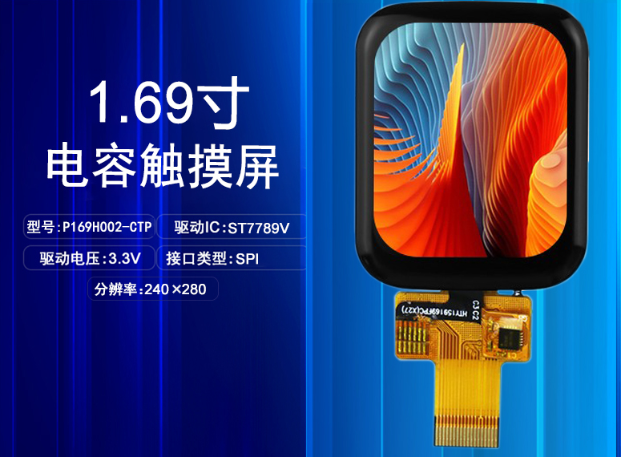
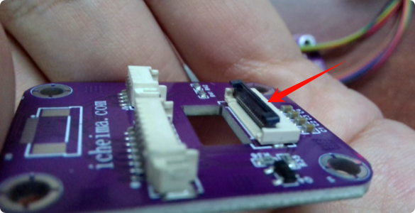
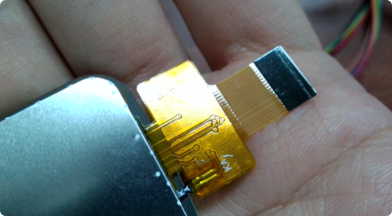
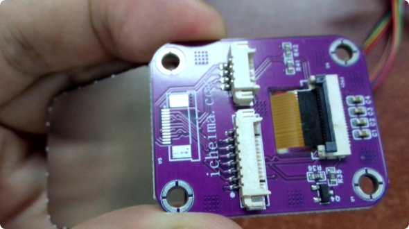
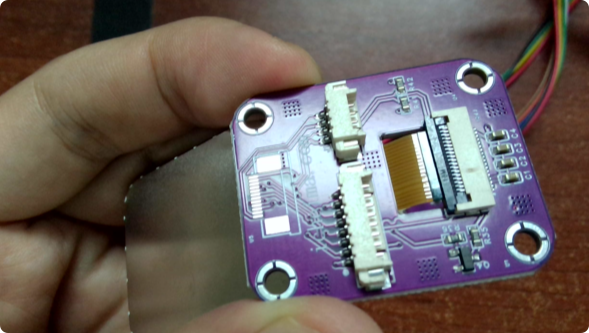
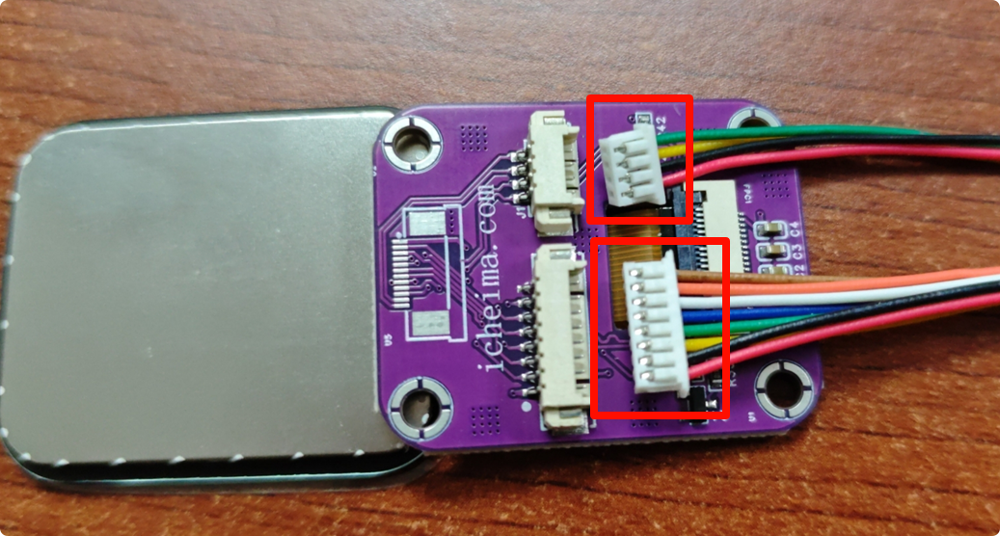
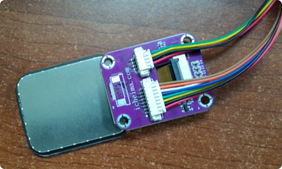

<!DOCTYPE lake>
<p data-lake-id="uaf823316" id="uaf823316" style="text-align: center"><br/></p><h2 data-lake-id="ZJhDB" id="ZJhDB"><span data-lake-id="u70f9112e" id="u70f9112e">TFT屏幕介绍</span></h2><p data-lake-id="u290857e7" id="u290857e7"><br/></p><p data-lake-id="ud081c742" id="ud081c742" style="text-align: center"></p><p data-lake-id="ua51e48ed" id="ua51e48ed" style="text-align: left"><span data-lake-id="ub14095a4" id="ub14095a4">本节我们所要驱动的屏幕是由两部分内容所组成</span></p><ul list="u73bb2c52"><li data-lake-id="uf71b996d" fid="u6c0c274c" id="uf71b996d" style="text-align: left"><span data-lake-id="uaec97dc5" id="uaec97dc5">触摸部分是cst816t芯片</span></li><li data-lake-id="u3cfd47f6" fid="u6c0c274c" id="u3cfd47f6" style="text-align: left"><span data-lake-id="u370c6dea" id="u370c6dea">显示部分驱动是st7789</span></li></ul><p data-lake-id="u742b1a82" id="u742b1a82" style="text-align: left"><span data-lake-id="u6aeabae3" id="u6aeabae3">切记触摸屏是由两部分所组成，一部分负责显示，另外一部分负责触摸</span></p><p data-lake-id="ucea1a694" id="ucea1a694" style="text-align: left"><span data-lake-id="u41876dc8" id="u41876dc8">​</span><br/></p><p data-lake-id="ub51ec172" id="ub51ec172" style="text-align: left"><span data-lake-id="ube47dd92" id="ube47dd92">通常我们在显示模块的时候， 卖家都会提供相应的驱动代码，下面我就列出gd32相关示例代码</span></p><p data-lake-id="u8d9fc529" id="u8d9fc529" style="text-align: left"><a class="yuque-card-link" href="../../_assets/bfc9a0c24f4ce856dc1b561e.zip">gd32驱动代码.zip</a></p><p data-lake-id="u9a262db7" id="u9a262db7" style="text-align: left"><span data-lake-id="u176c66e6" id="u176c66e6">在我们调试显示模块的时候， 我们应当首先确保屏幕的背光是否亮起。</span></p><p data-lake-id="u27a46d9b" id="u27a46d9b" style="text-align: left"><strong><span data-lake-id="u909deb99" id="u909deb99">当背光亮起的时候，可以验证我们的排线是否连接正确</span></strong></p><p data-lake-id="u9b6c12ac" id="u9b6c12ac" style="text-align: left"></p><p data-lake-id="u6d6fddbe" id="u6d6fddbe" style="text-align: left"><span data-lake-id="u2008effb" id="u2008effb">下面是驱动代码在main.c文件中的调用示例，注意移植的时候，需要将响应的SPI,GPIO端口改成当前自己的开发板对应接口</span></p><p data-lake-id="u95137bee" id="u95137bee" style="text-align: left"><span data-lake-id="u43e80af3" id="u43e80af3">​</span><br/></p><p data-lake-id="u7b77b676" id="u7b77b676" style="text-align: left"><span data-lake-id="u0b8e84fa" id="u0b8e84fa">触摸部分的调用</span></p><span class="yuque-card-unsupported">[codeblock]</span><p data-lake-id="ua4e49841" id="ua4e49841"><span data-lake-id="ueac501ae" id="ueac501ae">屏幕显示驱动</span></p><span class="yuque-card-unsupported">[codeblock]</span><h2 data-lake-id="qm3GA" id="qm3GA"><span data-lake-id="u5b0aca92" id="u5b0aca92">接线方式</span></h2><h3 data-lake-id="t969s" data-lake-index-type="0" id="t969s"><span data-lake-id="u78f21de7" id="u78f21de7">翘起软排线端子母头</span></h3><p data-lake-id="uebb97249" id="uebb97249"></p><h3 data-lake-id="KKd9H" data-lake-index-type="0" id="KKd9H"><span data-lake-id="u4cd05874" id="u4cd05874">插入屏幕软排线（黑色朝上）</span></h3><p data-lake-id="u3a055a85" id="u3a055a85"></p><p data-lake-id="u6883735b" id="u6883735b"><span data-lake-id="u6ba71d2e" id="u6ba71d2e">屏幕从背面穿过孔，插到端子里（黑色面朝上）</span></p><p data-lake-id="u72a0582b" id="u72a0582b"></p><p data-lake-id="u9969edc4" id="u9969edc4"><span data-lake-id="u585e678b" id="u585e678b">扣下黑色锁扣</span></p><p data-lake-id="u90e66509" id="u90e66509"></p><h3 data-lake-id="qVqgt" data-lake-index-type="0" id="qVqgt"><span data-lake-id="udb1b3d08" id="udb1b3d08">接上8Pin和4Pin端子</span></h3><p data-lake-id="ud71aae32" id="ud71aae32"><span data-lake-id="u5d32a9e3" id="u5d32a9e3">注意端子分上下面，带分叉面朝上</span></p><p data-lake-id="u6c3a4b6a" id="u6c3a4b6a"></p><p data-lake-id="udfc9909b" id="udfc9909b"></p>